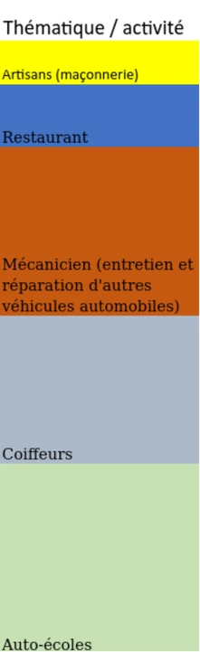
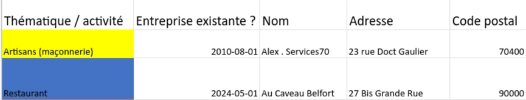
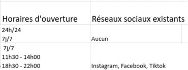
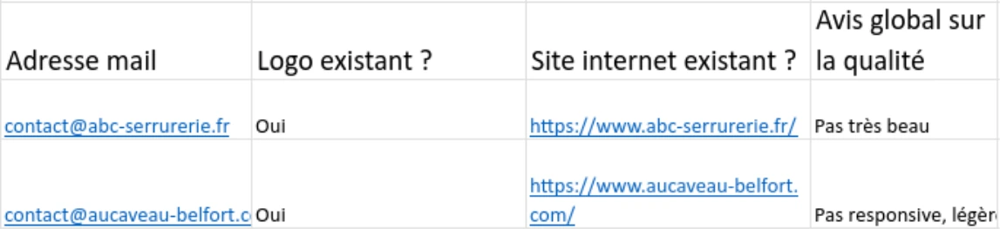
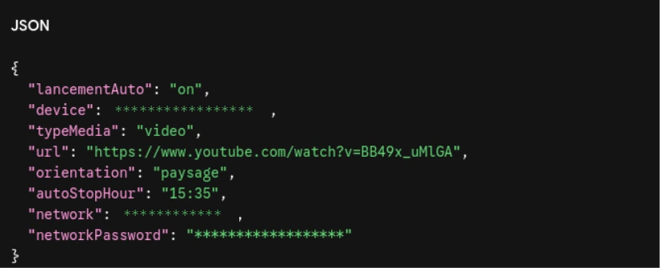

STAGE EN DÉVELOPPEMENT · APPUP
API & affichage multimédia
Pendant mon stage de deuxième année, j’ai développé une API générique pour un site e-commerce et conçu des solutions d’affichage de contenus multimédias sur plusieurs types de supports.
Aperçus du projet
Quelques aperçus des informations sur les établissements recherchés et des contenus gérés par l’application.








Affichage sur borne interactive
La borne récupère des données depuis une API externe accessible sur Internet. Ces valeurs — type de média, URL du contenu, orientation, lancement automatique et heure d’arrêt — servent à paramétrer l’affiche diffusée.

Présentation du projet principal
Pendant mon stage chez Appup, à Montbéliard, j’ai conçu et développé de A à Z une API générique intégrée à un site e-commerce de vêtements. Elle n’est liée à aucun domaine précis : elle peut gérer tout type de données, ce qui la rend réutilisable pour d’autres projets.
Elle s’appuie sur des services externes : Brevo pour l’envoi d’e-mails, Stripe pour le paiement en ligne et AWS pour le stockage de fichiers.
Missions principales
- Concevoir et développer de A à Z une API générique intégrée à un site e-commerce
- Intégrer Brevo (e-mails), Stripe (paiement) et AWS (stockage de fichiers)
- Concevoir des solutions d’affichage de contenus multimédias sur différents supports
- Prendre en charge des bornes interactives, Raspberry Pi et PC Windows